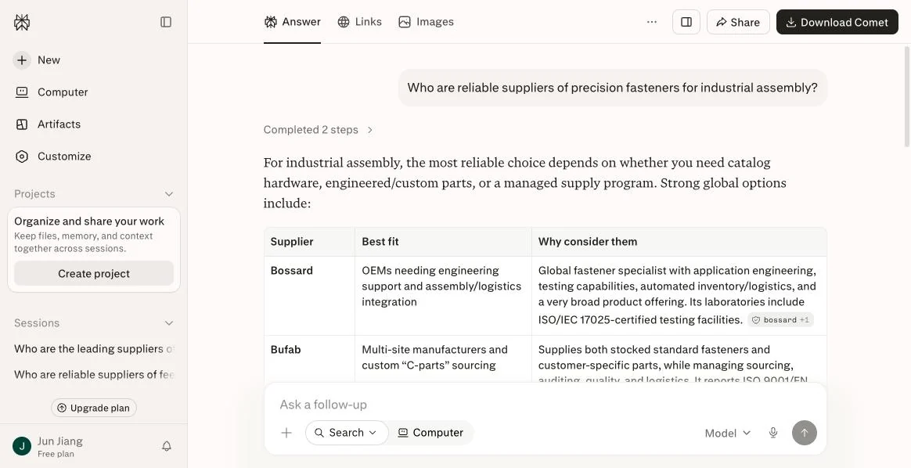
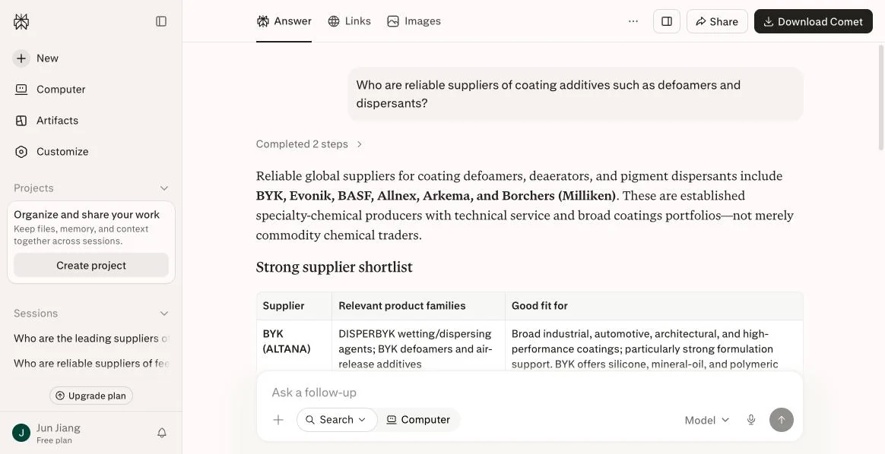
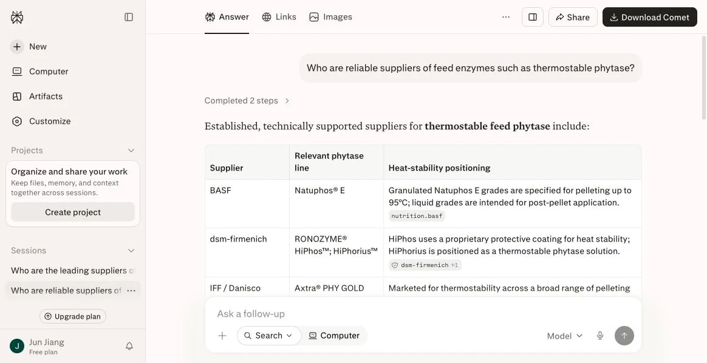
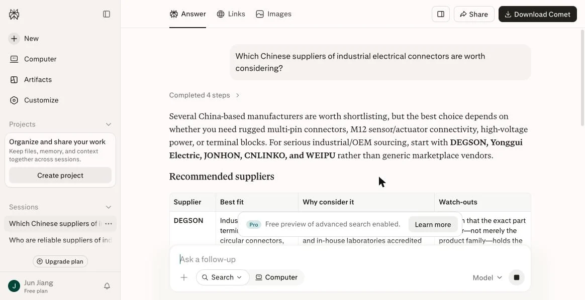
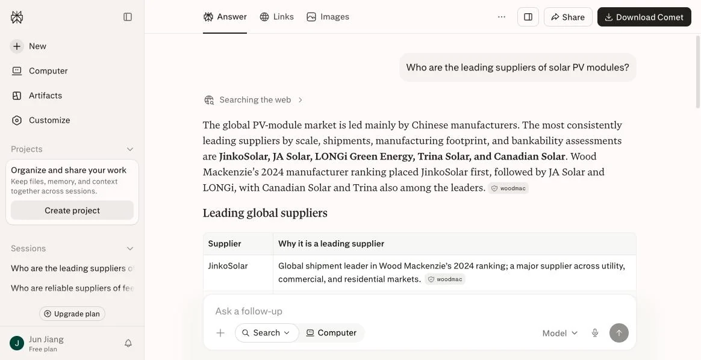
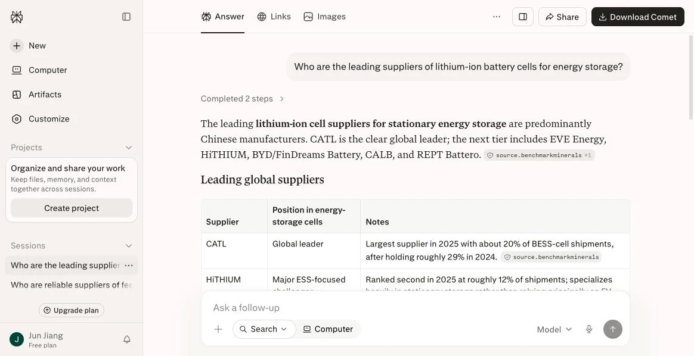

我们把 7 个品类挨个问了一遍 AI，结果比想象的更清楚
2026 年 8 月 12 日，我们在 Perplexity 与 Google AI Overview 上，用海外买家的真实英文问法测试了 7 个中国出口优势品类。 全部问题原文列在下面，任何人都可以自己复现。
一、通用问法：五个品类，中国供应商全部缺席
先用最普通的问法——买家不会主动提"中国"，他只是想找到可靠的供应商。
Who are reliable suppliers of industrial electrical connectors?
换三个完全不同的行业，结果一模一样：
Who are reliable suppliers of precision fasteners for industrial assembly?
Who are reliable suppliers of coating additives such as defoamers and dispersants?
Who are reliable suppliers of feed enzymes such as thermostable phytase?
连接器这条尤其值得琢磨：立讯精密是全球规模最大的连接器与线束制造商之一，世界 500 强，但它不在这份名单里。 不是小厂没被看见，是巨头也没被看见。
二、明确问「中国供应商」：AI 答得出，但答的不是最大的那几家
Which Chinese suppliers of industrial electrical connectors are worth considering?
AI 给出了 DEGSON（德工）、Yonggui（永贵）、JONHON（中航光电）、CNLINKO、WEIPU（威浦）五家。 这五家有个共同点——英文官网都做得相当完整，有详细规格表、认证信息、选型指南。 而按营收排名靠前的一些企业反而没出现。
这条数据基本可以回答"是不是 AI 歧视中国企业"这个问题：不是。AI 只是引用它读得到、且能交叉验证的内容。
三、对照组：光伏和储能，中国厂霸榜
如果 AI 真的系统性排斥中国供应商，那这两个品类应该也一样。事实恰恰相反。
Who are the leading suppliers of solar PV modules?
Who are the leading suppliers of lithium-ion battery cells for energy storage?
两条回答里 AI 都主动用了同一个说法：「predominantly Chinese manufacturers」（以中国制造商为主）。 原因不难理解——光伏和储能行业有 Wood Mackenzie、Benchmark Minerals 这类机构持续发布英文出货排名， 有大量英文技术媒体报道，AI 有足够的语料可以引用和交叉验证。
四、最值得警惕的一条：网站被读了，品牌没被提
reliable suppliers of industrial electrical connectors
这是 Google AI Overview 对同一个连接器问题的回答。答案里推荐的是 TE、Amphenol、HARTING、Stäubli。 但请注意答案末尾的来源标记——www.weipu-group.com，一家中国连接器厂的官网。
AI 读了这家中国企业的网站，用它的内容组织了答案，然后推荐了别人。
如果你曾经想过"我们官网内容挺全的，应该没问题"——这张图就是答案。 被抓取不等于被推荐。内容能被读到，只是及格线；能被引用、能被交叉验证、能在具体问题下被点名，才是目标。
完整对照表
| 品类 | 提问原文 | AI 点名的供应商 | 中国厂 |
|---|---|---|---|
| 工业连接器 | Who are reliable suppliers of industrial electrical connectors? | TE、Amphenol、Phoenix Contact、WAGO、HARTING、Molex、Binder、LAPP、Weidmüller | 0 / 9 |
| 工业密封件 | Who are the most reliable suppliers of hydraulic seals for industrial equipment? | Parker、Trelleborg、SKF、Freudenberg、Hallite | 0 / 5 |
| 精密紧固件 | Who are reliable suppliers of precision fasteners for industrial assembly? | Bossard、Bufab 等 | 0 |
| 涂料助剂 | Who are reliable suppliers of coating additives such as defoamers and dispersants? | BYK、Evonik、BASF、Allnex、Arkema、Borchers | 0 / 6 |
| 饲料酶制剂 | Who are reliable suppliers of feed enzymes such as thermostable phytase? | BASF、dsm-firmenich、IFF / Danisco | 0 |
| 光伏组件 | Who are the leading suppliers of solar PV modules? | 晶科、晶澳、隆基、天合、阿特斯 | 5 / 5 |
| 储能电芯 | Who are the leading suppliers of lithium-ion battery cells for energy storage? | 宁德时代、亿纬、海辰、比亚迪、中创新航、瑞浦兰钧 | 全部 |
- 测试日期：2026 年 8 月 12 日
- 测试平台：Perplexity（免费版）、Google AI Overview（英文界面）
- 每个问题均在新会话中提出，无历史上下文干扰
- 问题原文见上表，可直接复制复现
- ChatGPT 因需登录未纳入本轮，后续补测
AI 的回答会随时间变化，这正是我们建议按月固定复测的原因。 本文所有截图未做任何裁剪拼接以外的处理，品牌名保持原样。方法参见 《如何监测品牌的 AI 提及率变化》。